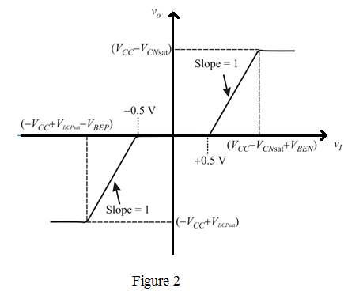

Consider the peak amplitude as  .
.
When the input voltage  is zero, both the transistors are cut off and the output voltage,
is zero, both the transistors are cut off and the output voltage,  is zero.
is zero.
As  goes positive and exceeds
goes positive and exceeds  , the transistor
, the transistor  conducts as an emitter follower.
conducts as an emitter follower.
In this case,  follows
follows  .
.
If the input goes negative by more than about ,
,  turns on and acts as an emitter follower. Again,
turns on and acts as an emitter follower. Again,  follows
follows  .
.
Sketch the transfer characteristic of the class B stage as shown in Figure 2.



 loss in peak amplitude.
loss in peak amplitude.